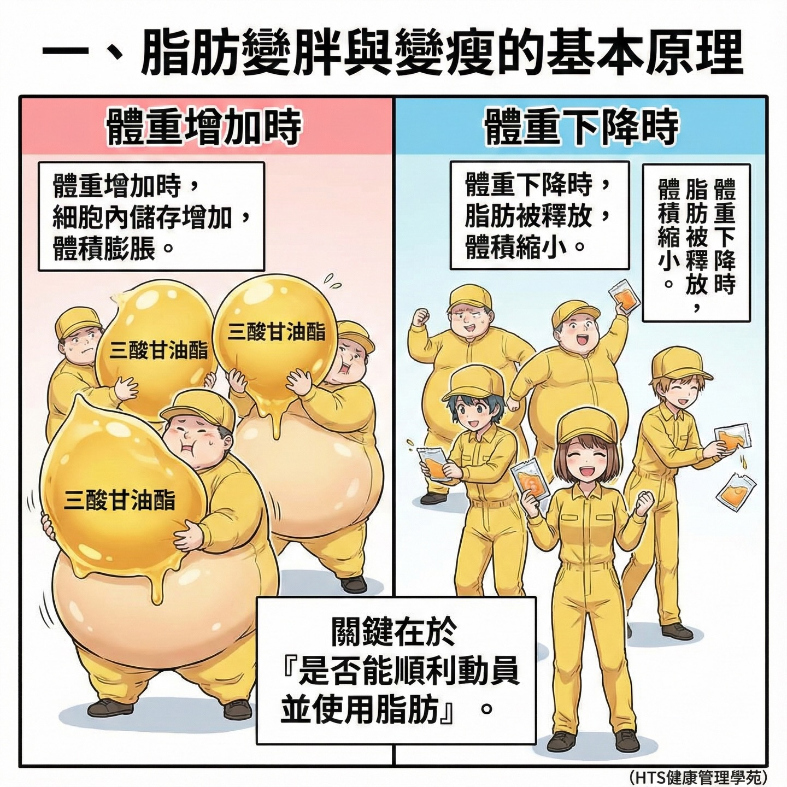
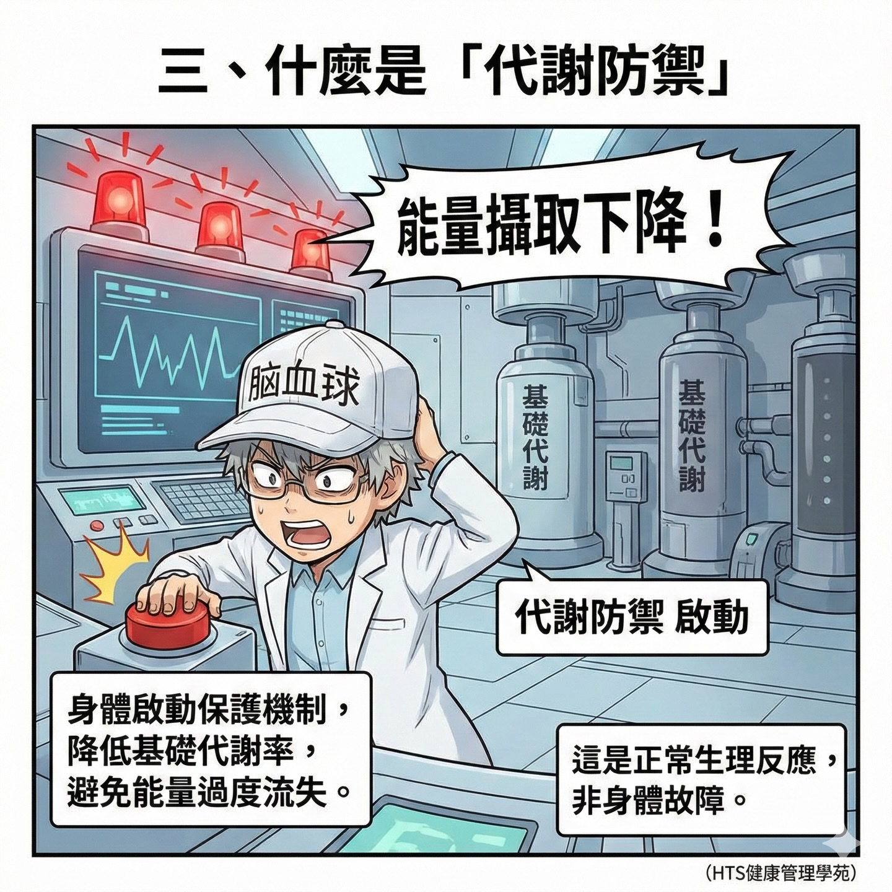
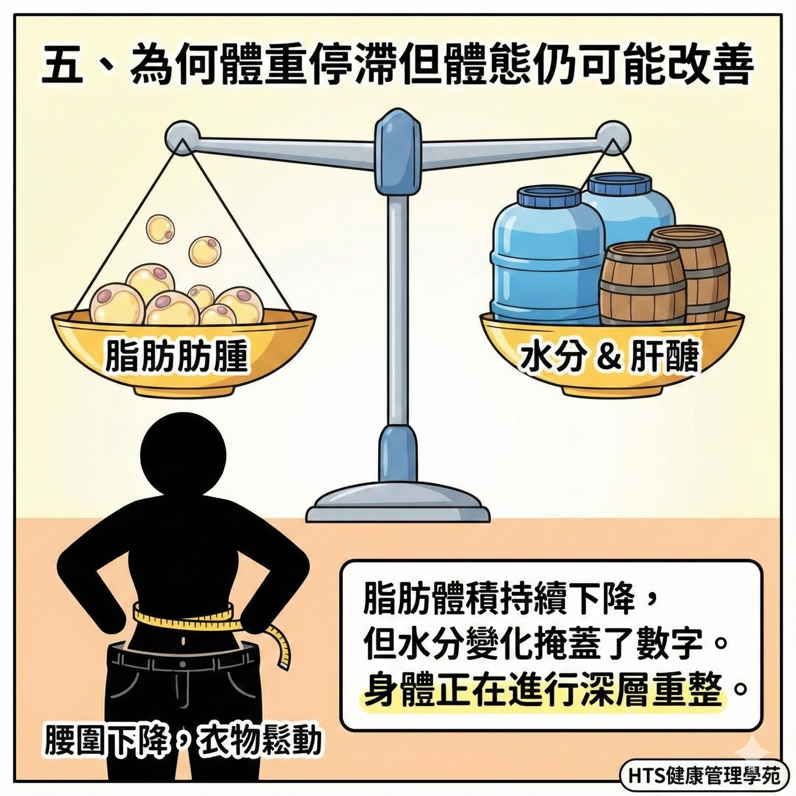

代謝力與慢性病風險管理
主題來源：S one 磁碟「【醫】醫療健康營養(含圖說）」中的《D》力 代謝力資料夾內容。

目的：用可執行的生活策略，降低肥胖、糖尿病、脂肪肝與心血管風險。
01｜為什麼代謝力是預防醫學核心？
- 代謝失衡通常先於疾病出現，是慢性病前期的重要警訊。
- 血糖波動、內臟脂肪累積、睡眠不足會互相放大風險。
- 越早介入生活型態，越能避免後續高醫療成本。
02｜三大風險來源
飲食結構
高糖高精緻澱粉、進食時段混亂，容易造成胰島素負擔。
活動不足
久坐讓肌肉葡萄糖利用率下降，基礎代謝持續下滑。
睡眠與壓力
睡眠不足與慢性壓力會推高食慾與發炎，干擾代謝調節。
忽略追蹤
沒有定期看腰圍、空腹血糖、三酸甘油脂，容易錯過早期修正窗口。
03｜可執行的「代謝防線」

- 餐盤法：每餐先確保蛋白質與蔬菜，再安排主食份量。
- 日常活動：每天至少 7,000–10,000 步，每週 2–3 次肌力訓練。
- 睡眠修復：固定就寢、減少熬夜，將睡眠視為代謝處方。
04｜90 天追蹤指標（門診/自我管理）

- 每 2 週：體重、腰圍、步數與運動分鐘數。
- 每 1–3 個月：空腹血糖、HbA1c、血脂（TG/HDL）與肝功能。
- 以「趨勢改善」為目標，不追求短期極端節食。
05｜結語：預防重於治療
- 代謝力管理不是短跑，而是可持續的生活系統設計。
- 從飲食、運動、睡眠、追蹤四條線同步啟動，效果最好。
- 把「早發現、早修正」變成團隊與個人共同習慣。
備註：此簡報為圖文教育版，供健康促進與衛教討論使用。